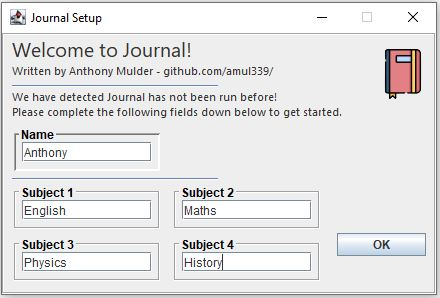
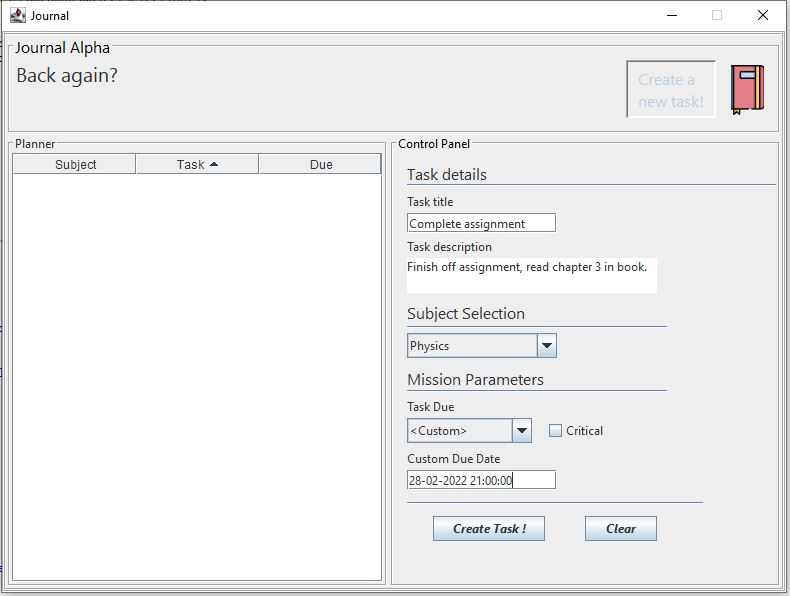
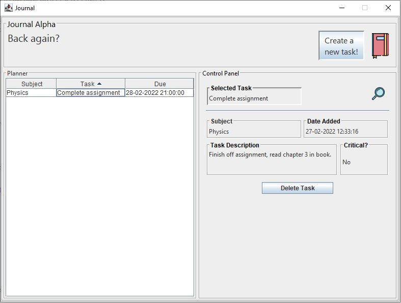

latest developments with Journal (as of 27/02/2022) - new UI and more.
source code available in repo.

Setup launcher for Journal (in progress)

Task creation (support for custom dates)

ui dynamically switches when selecting a task on the table
Planned: reward systems, reimplementing save/load functionality (very important) and more.